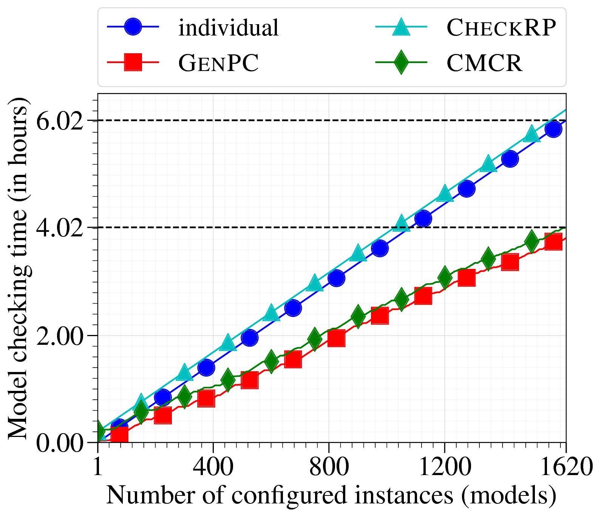
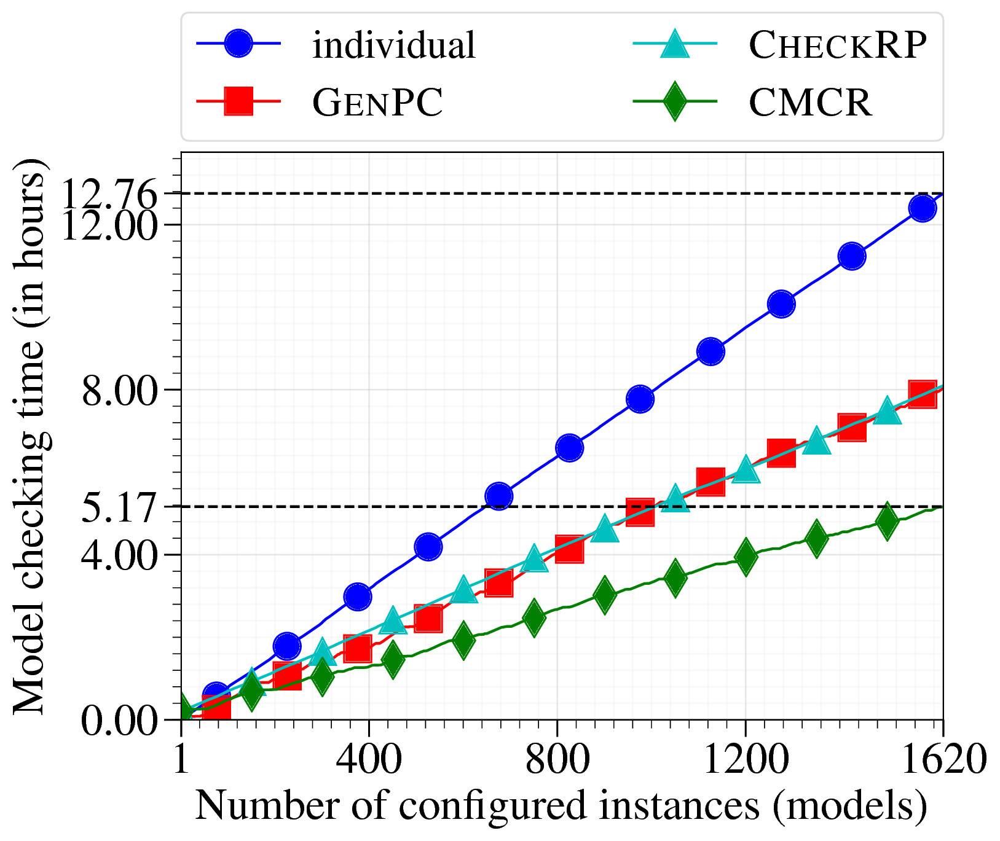
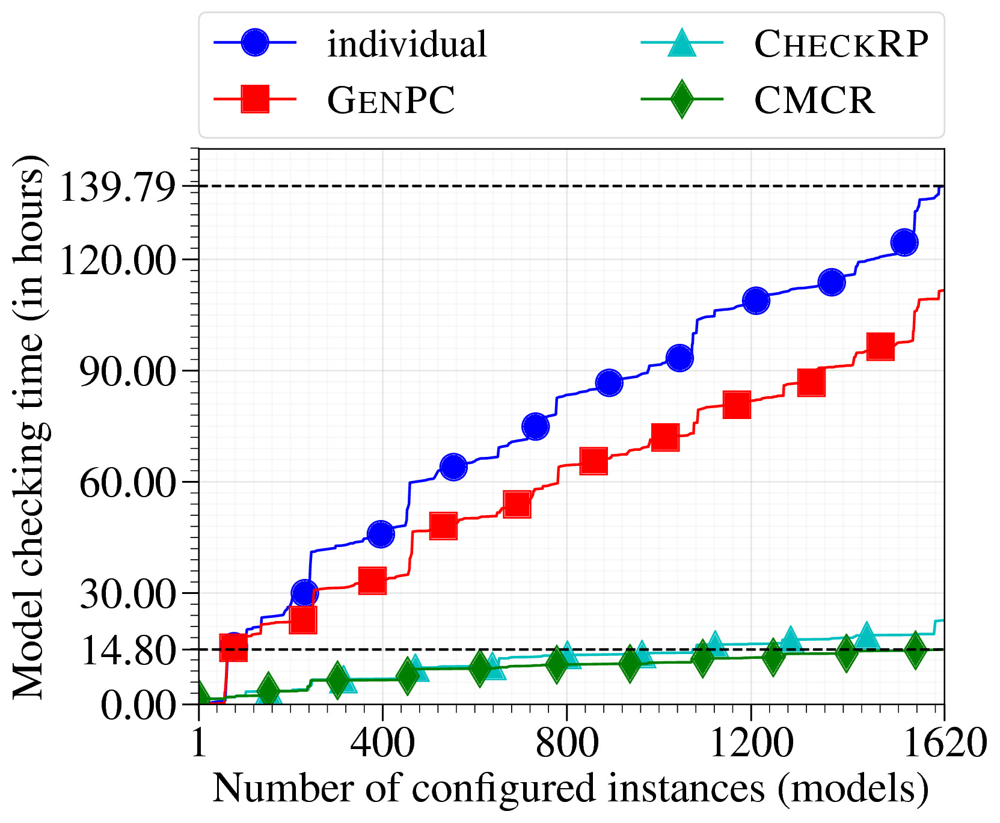
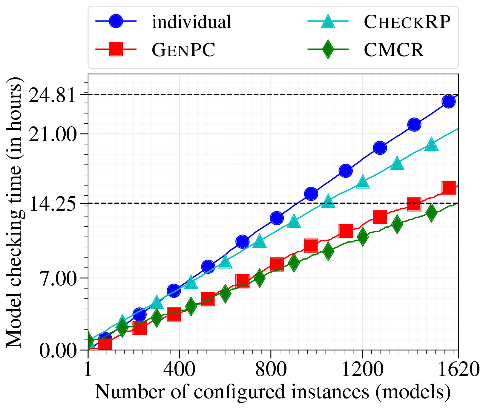
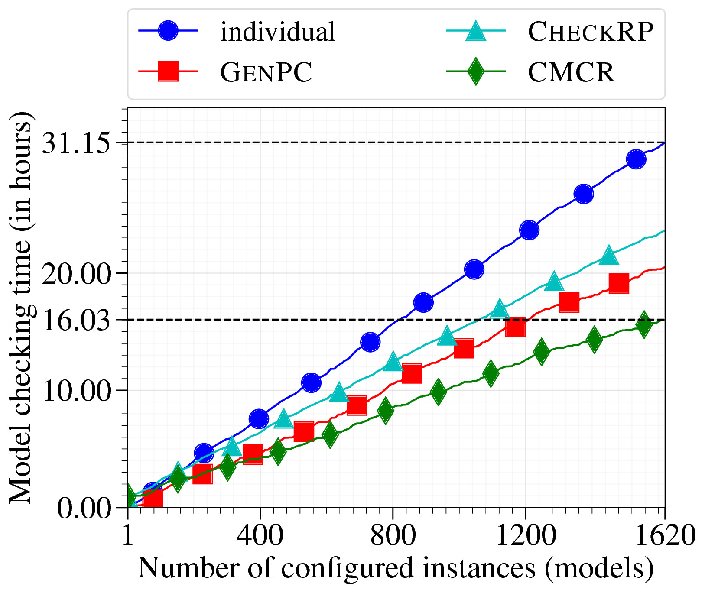
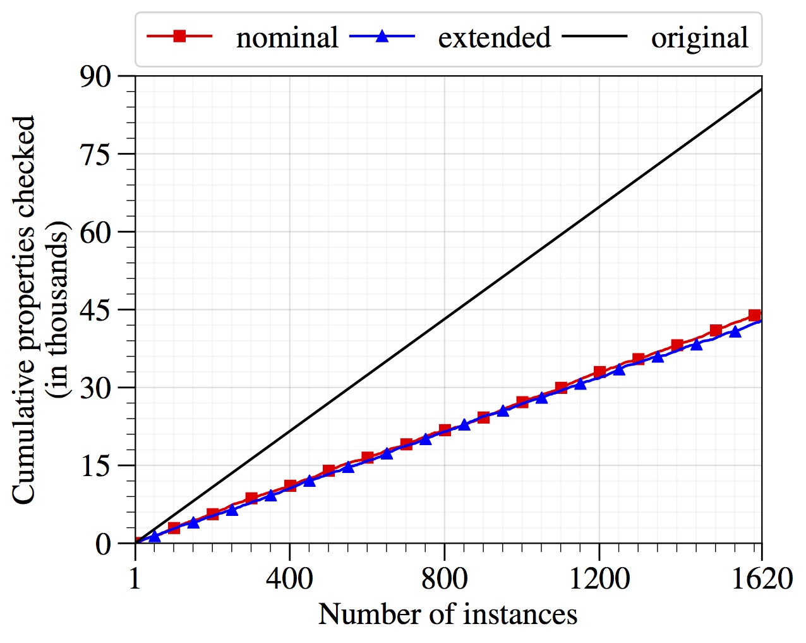

Combinatorial Model Checking Reduction
Rohit Dureja and Kristin Yvonne Rozier
This webpage contains further details and artifacts for reproducibility of the experiments in "Combinatorial Model Checking Reduction" by R. Dureja and K.Y. Rozier.
Results
Most of the experimental results have been described in the paper. This webpage contains some additional plots for the results. The data to regenerate these plots can be found here.
Validation



Verification
These plots are the same as the ones in the paper, and are reproduced here for the sake of completeness.


Overall Results
These plots show cumulative LTL properties checked in the original set of models, and after applying the CMCR algorithm, for nominal and extended verification. A total of 54 verification properties are checked for each of the nominal and extended models.- Before: 54 * 1,620 = 87,480 verification properties are checked each for nominal and extended models.
- After: A total of 44,451 verification properties are checked for nominal models with a median 44, mean 43 properties per model.
- After: A total of 42,924 verification properties are checked for extended models with a median 44, mean 44 properties per model.
